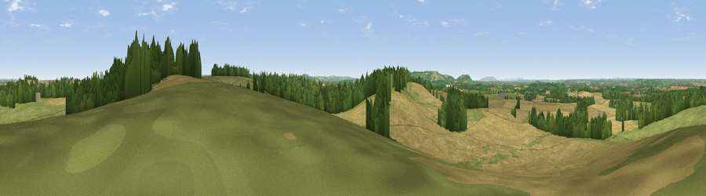

Viewpoint near Alderminster
#16484 in England · top 31% of its area beats it · near AlderminsterThe view, rendered

A 360° render of this exact spot computed from the terrain model, tree cover and land cover — summer colours, afternoon light, calibrated against photographs of famous viewpoints. Real trees, hedges and buildings will differ in detail.
The panorama
Grey silhouette: terrain skyline in each direction (720 bearings, Earth curvature and refraction included). Dashed green: skyline with trees (+15 m) and buildings (+8 m) as obstacles. Blue strip: how far the ground is visible on each bearing.
Where the view opens
Wedge length = distance to the farthest visible ground on that bearing (vegetation-aware). Rings at 10, 25 and 50 km.
What fills the view
55% cropland · 28% grassland · 16% woodland ·
Angular shares of the visible panorama (visual magnitude), not map area. Landscape diversity 0.45 (0–1 Shannon).
Key numbers
More beautiful places nearby
The staircase of upgrades: each row has a higher view potential than everything closer. Driving times are estimates from straight-line distance, calibrated against real road routing — check an actual route before setting out.
| Place | Direction | Drive | Score |
|---|---|---|---|
| Viewpoint near Ettington | NNE · 2 km | ~5 min | 60.1 |
| Viewpoint near Meon Vale | WSW · 8 km | ~17 min | 77.0 |
| Broadway Hill | SW · 19 km | ~33 min | 77.7 |
| Viewpoint near Elmley Castle | WSW · 29 km | ~46 min | 80.5 |
| Bredon Hill | WSW · 30 km | ~47 min | 83.0 |
| North Hill | W · 48 km | ~68 min | 86.8 |
| Worcestershire Beacon | W · 48 km | ~69 min | 87.1 |
| Viewpoint near West Quantoxhead | SW · 155 km | ~178 min | 87.9 |
52.14617, -1.64155 · source: screening · position refined by local search. Computed location — check access rights before visiting.